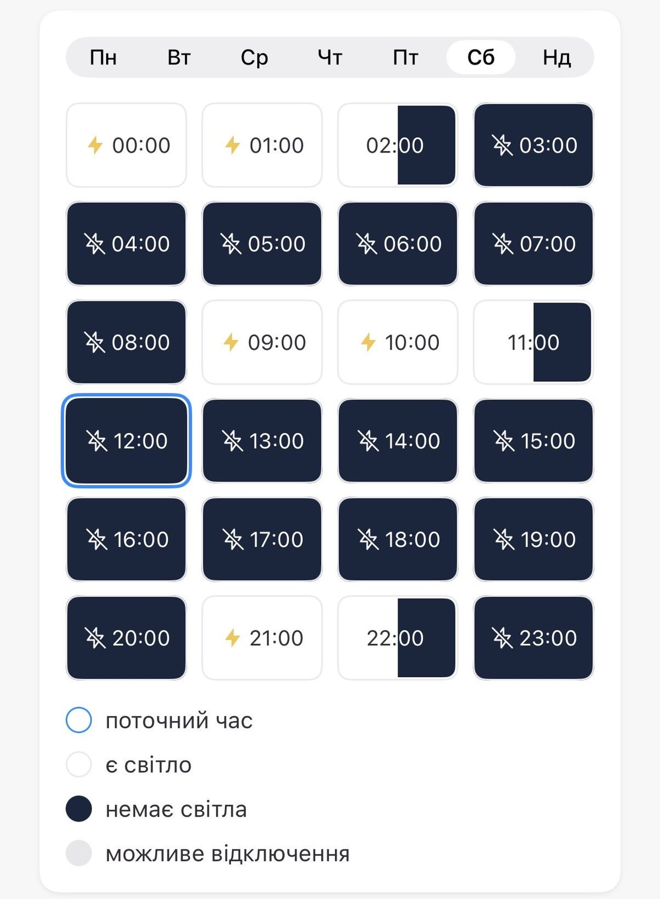

Världen
Delvis obekräftatZelenskyj vill möta Putin i Turkiet – men har ännu inte fått någon inbjudan till G20

Volodymyr Zelenskyj säger att han är redo att träffa Vladimir Putin i Turkiet och har bett Recep Tayyip Erdoğan att ordna mötet, samtidigt som han uppger att han ännu inte har fått någon inbjudan till G20-toppmötet i Miami i december, dit Putin redan är bjuden. Donald Trump har sagt att han gärna bjuder in Zelenskyj, och Kreml svarar att ett möte i så fall får ske i Moskva. Natten till söndag skickade Ryssland enligt ukrainska flygvapnet 433 drönare mot Ukraina, en av krigets största attacker, och Kyiv har fått nödavbrott i elen. Samtidigt brinner raffinaderiet i ryska Kstovo efter en ukrainsk drönarattack. Finlands president Alexander Stubb säger att trepartssamtalen i Abu Dhabi är nästa steg.
Lördagen visade krigets två spår på en och samma dag. Medan hundratusentals ukrainska hushåll satt utan ström efter nattens ryska drönarattacker reste president Volodymyr Zelenskyj till Istanbul för att försöka få fart på diplomatin inför november.
Söndag kväll: Zelenskyj vill hellre ses i Turkiet
På söndagskvällen spreds en lång intervju som Zelenskyj gett till CNN Türk efter mötet med Erdoğan i Istanbul. Enligt Sprinter Report föreslog han där att Erdoğan ska ordna ett möte mellan honom och Putin i Turkiet, och att man ska få till en vapenvila i Svarta havet. "Jag vet att president Erdoğan har kontakt med Putin. Därför stöder vi mötet i Turkiet", säger Zelenskyj enligt journalisten Tim White. Han hoppas att Erdoğan ska kunna ordna ett fredstoppmöte, återger Agoraphobic Journalist.
Trumps besked om G20 har alltså inte följts av något formellt. Zelenskyj säger att han ännu inte har fått någon inbjudan till toppmötet, rapporterar ukrainska Censor.net, och den ukrainska kanalen Espreso beskriver det som att han håller öppet för både Turkiet och Miami som mötesplats. Ett möte i Moskva, som Kreml vill ha, är inte aktuellt för Kyiv.
Enligt kontot Think BRICS säger Zelenskyj också att tekniska delegationer från USA, Ryssland och Ukraina hoppas kunna ses i Abu Dhabi till mitten av november, och att ett möte på ledarnivå kräver full vapenvila. Den uppgiften har vi bara sett från det kontot.
Samtidigt pekar en analys i New York Times, som användaren Alexport återger, på att Putin håller på att bryta sin isolering med Trumps hjälp.
Söndagen: G20 i Miami och Kremls svar
Diplomatin tog ett nytt varv under helgen. På frågan om han skulle bjuda in Zelenskyj till G20-toppmötet i Miami den 14–15 december, dit Putin redan är inbjuden, svarade Donald Trump "I would. I would. No problem.", enligt NOEL Reports, NEXTA och Sprinter Press. Mötet hålls på Trumps golfanläggning Doral, och enligt NEXTA bekräftade utrikesminister Marco Rubio redan i september att Putin bjudits in. Ingen formell inbjudan till Zelenskyj har dock meddelats, påpekar Golgeveri.
Från Moskva kom ett svar på söndagsmorgonen. Putins rådgivare Jurij Usjakov sade att Putin "naturligtvis" skulle svara om Zelenskyj ringde, eftersom han "aldrig vägrat samtal", enligt Viktor Kovalenko och Military Summary. Men vill Zelenskyj träffas på riktigt får han komma till Moskva, något Kyiv tidigare avvisat. Enligt Ilya Boudinov vill Moskva att en första förhandlingsrunda med Ryssland, USA och Ukraina hålls i Abu Dhabi senast den 10 november, medan Europa får vänta till ett senare skede; den uppgiften har vi bara sett från honom. Zelenskyj skrev själv i lördags att man förbereder ett trepartsformat med USA och Ryssland under första halvan av november.
Stubb: samtalet med Putin ska bana väg
Under söndagen gav Finlands president Alexander Stubb sin bild av det 90 minuter långa telefonsamtal som han och Norges statsminister Jonas Gahr Støre hade med Putin tidigare i veckan. Enligt den ukrainske ekonomen Tymofiy Mylovanov, som hänvisar till nyhetsbyrån Interfax-Ukraine, säger Stubb att syftet var att skapa förutsättningar för ett möte ansikte mot ansikte mellan Zelenskyj och Putin, men att det viktigaste just nu är att de planerade samtalen mellan USA, Ukraina och Ryssland i Abu Dhabi ger resultat.
Stubb säger också att samtalet föregicks av diskussioner med Ukraina och USA efter ett möte i Oslo den 20 oktober, och att både Kyiv och Washington gav klartecken innan Finland och Norge ringde Putin. Han avvisar Financial Times uppgift om att Putin ägnade större delen av samtalet åt en lång historielektion: enligt Stubb blev samtalet konkret och sakligt. Finland söker ingen plats vid förhandlingsbordet, säger han, och de europeiska länderna har haft svårt att enas om en gemensam företrädare. Alla i Europa är inte nöjda: Danmarks statsminister Mette Frederiksen har enligt ApexWire sagt att samtalet inte samordnades med resten av Europa.
Från Kreml kom samtidigt nya signaler om formen. Putins rådgivare Jurij Usjakov föreslår att de första förhandlingsrundorna hålls i trepartsformat med USA, Ryssland och Ukraina, enligt Anadolu. Enligt Redacted säger Kreml att inget datum är bestämt, att det beror på läget vid fronten och i Mellanöstern och att Europa inte får sitta med vid bordet. Den uppgiften har vi bara sett där.
Samma helg kom de första civila ut ur det ockuperade Olesjky efter en överenskommelse som USA:s första dam Melania Trump hjälpt till med. Det skriver vi om i en egen artikel.
Söndagsmorgonen: 433 drönare på en natt
När ukrainska flygvapnet summerade natten vid halv åtta på söndagsmorgonen var siffrorna betydligt större än de första uppgifterna. Ryssland hade enligt flygvapnet, som det återges av RBC-Ukraine, skickat 433 drönare, varav 64 jetdrivna. 371 hade skjutits ned eller störts ut, men över 40 var fortfarande i luften, och träffar registrerades på 16 platser och nedfallande vrakdelar på 14, enligt Hromadske Radio och det lokala kontot ZMiST. Elbolaget DTEK har infört nödavbrott i Kyiv, enligt ApexWire, och Michael Bociurkiw vid tankesmedjan Atlantic Council skriver att den lokala vapenvilan kring Olesjky verkar vara över.
Ukraina svarade samma natt. Raffinaderiet NORSI i Kstovo, som ägs av Lukoil, började brinna efter en drönarattack, enligt ConflictRadar och den ukrainska militärsajten Militarnyi som återges av Velites. Guvernören i Nizjnij Novgorod varnar enligt ValueMedia för avbrott i värme och varmvatten. Kyiv avvisar samtidigt uppgifter om att man skulle ha gått med på att pausa anfallen mot ryska raffinaderier, enligt Kyiv Independent som det återges av Maks.
De första uppgifterna och väntan på luftvärn
Attackerna fortsatte under natten till söndag. Ukrainska flygvapnet uppger att Ryssland skickade 134 attackdrönare, varav 105 sköts ned, och att explosioner och bränder drabbade Kyiv, Dnipro, Charkiv och Sumy, enligt The GlobeBrief. Omkring hälften av drönarna ska ha varit jetdrivna. I Kyivs stadsdel Troiesjtjyna klagar invånare på att strömmen varit borta i 12–15 timmar, längre än de schemalagda avstängningarna, enligt en sammanställning av inlägg.
Samtidigt blev det klart hur länge Ukraina kan behöva vänta på mer luftvärn. USA:s utrikesdepartement godkände på fredagen en försäljning av 500 Patriot-robotar för 2,1 miljarder dollar, betald av europeiska allierade. Men enligt CBS News räknar ukrainska soldater inte med att robotarna är på plats före 2030, och bristen har gjort att amerikanska avfyrningsramper stått oanvända i centrala Ukraina i åtta månader. CBS-reportern Aidan Stretch i Kyiv skriver att Zelenskyj uppger att landet får omkring tolv Patriot-robotar i månaden, medan Ryssland skjutit ungefär 100 ballistiska robotar mot Kyiv bara de senaste två veckorna.
Ukraina slår också tillbaka. Generalstaben säger att drönare och Neptun-robotar träffat Kamenskij-kombinatet i Rostovregionen, som tillverkar fast bränsle till raketartilleri. Enligt Interfax-Ukraine, som det återges av Deeploomatic och Guardian Andy, skadades fyra verkstadshallar och ett lager började brinna. Under natten till söndag rapporterar ett konto även om bränder efter en drönarattack mot raffinaderiet i Kstovo, vilket vi inte kunnat bekräfta.
Energin under attack igen
Enligt Zelenskyj själv träffade ryska Shahed-drönare ett kraftvärmeverk i Kyiv under fredagskvällen. Under natten slogs fyra transformatorstationer ut i Dnipropetrovsk-regionen, och tidigt på morgonen träffades ett kraftvärmeverk i Shostka i norra Ukraina. Även järnvägen i Dnipro och en gasanläggning drabbades. Totalt blev omkring 280 000 hushåll strömlösa, varav cirka 200 000 i Dnipro med omnejd och drygt 80 000 i Kyivregionen, enligt Mockingjay News UA.
För invånarna i huvudstaden märks det direkt. Redaktören Denys Glusjko i Kyiv skriver att han har el hemma i sex och en halv timme av dygnets 24, efter veckans ryska attacker mot stadens energisystem. Enligt Military Summary har strikta avstängningsscheman införts i Kyiv där vissa är utan el i 14 till 18 timmar. Zelenskyj varnar för att den ryska upptrappningen kan sprida sig och kräver hårdare sanktioner.

Svarta havet i fokus i Istanbul
I Istanbul möttes Zelenskyj och Recep Tayyip Erdoğan på Svarta havets internationella dag. Efter mötet sa Zelenskyj att de kommit överens om att arbeta för att en spannmålskorridor i Svarta havet ska finnas och fungera, rapporterar Anadolu. Erdoğan sa vid presskonferensen att Turkiet är redo att göra allt för att bana väg för fred och att angrepp på civila fartyg inte gynnar någon. Enligt NOEL Reports diskuterades en möjlig vapenvila till sjöss med Turkiet som medlare.
Zelenskyj berättade också att de pratat om formatet för de samtal som planeras i Abu Dhabi i november och om andra möjligheter, "i synnerhet att involvera Turkiet, Europa och alla partner" och möjligheten till ett möte i Turkiet, enligt AFP:s korrespondent Fulya Özerkan. Enligt analytikern Ilya Boudinov sa Zelenskyj att trepartssamtalen ska hållas under första halvan av november och att Ukraina väntar på att Washington bestämmer datum. Flera konton, bland dem BoreSight, nämner 6–10 november, men det är inte bekräftat.
Blandade signaler från USA och Ryssland
Från Washington kommer olika budskap. President Trump sa i en intervju på lördagen att parterna är väldigt nära en överenskommelse, medan utrikesminister Marco Rubio vid G20-ländernas utrikesministermöte i Atlanta sa att ingen påstår att ett fredsavtal är nära förestående, enligt X:s sammanställning. Mötet i Atlanta slutade utan gemensamt uttalande. Kontot The Tectonic räknar till minst sju gånger sedan november 2025 som Trump sagt att man är nära ett avtal.
Rysslands utrikesminister Sergej Lavrov bjöd samtidigt in Zelenskyj till Moskva för att träffa Putin, med löfte om hans säkerhet, enligt en annan sammanställning. Ukraina vill i stället ha en neutral plats, och många på X ser inbjudan som ett utspel snarare än ett seriöst förslag.
Så vet vi det
Källmix: 51 källor – 2 primärkälla, 2 ögonvittne, 3 expert, 11 analys, 17 journalist, 6 etablerad media, 2 debattör, 1 myndighet, 1 lokalt konto, 4 nyhetskonto, 1 osint, 1 branschmedia. Etablerad media utgör 6 av 51.
- Primärkälla Volodymyr Zelenskyj: nattens attacker mot energi och järnväg
- Ögonvittne Denys Glusjko, redaktör i Kyiv: el 6,5 timmar per dygn
- Journalist Mockingjay News UA: 200 000 hushåll i Dnipro, över 80 000 i Kyivregionen
- Journalist Military Summary: avstängningsscheman på upp till 18 timmar
- Etablerad media Anadolu: Erdoğan om fred och angrepp på civila fartyg
- Etablerad media Anadolu: överens om att arbeta för en spannmålskorridor
- Journalist Fulya Özerkan, AFP:s korrespondent i Turkiet: möjliga samtalsformat
- Journalist NOEL Reports: möjlig vapenvila till sjöss med Turkiet som medlare
- Journalist BoreSight: hopp om samtal i Abu Dhabi 6–10 november
- Analys Ilya Boudinov: Ukraina väntar på att Washington sätter datum
- Analys The Tectonic: sjunde gången Trump säger "nära en överenskommelse"
- Analys X:s sammanställning: Trump optimistisk, Rubio avvaktande
- Analys X:s sammanställning: Lavrov bjuder in Zelenskyj till Moskva
- Etablerad media CBS News: 500 Patriot-robotar för 2,1 miljarder dollar, väntas inte före 2030
- Journalist Aidan Stretch, CBS News i Kyiv: omkring 12 Patriot-robotar i månaden
- Journalist The GlobeBrief återger ukrainska flygvapnet: 134 drönare, 105 nedskjutna
- Journalist Deeploomatic återger Interfax-Ukraine: fabrik för raketbränsle i Rostov träffad
- Analys Guardian Andy: generalstabens uppgifter om Kamenskij-kombinatet
- Ögonvittne Invånare i Troiesjtjyna i Kyiv utan ström i 12–15 timmar, återgivet
- Journalist Uppgift om drönarattack mot raffinaderiet i Kstovo (en källa)
- Myndighet Ukrainska flygvapnet via RBC-Ukraine: 433 drönare, varav 64 jetdrivna
- Journalist Hromadske Radio: 371 nedskjutna eller utstörda, träffar på 16 platser
- Lokalt konto ZMiST om nattens attack
- Analys Michael Bociurkiw, Atlantic Council: strömavbrott i Kyiv
- Nyhetskonto ApexWire: DTEK inför nödavbrott i Kyiv
- OSINT ConflictRadar: brand i raffinaderiet i Kstovo
- Branschmedia Militarnyi via Velites: Lukoils raffinaderi NORSI i Kstovo träffat
- Nyhetskonto ValueMedia: guvernören varnar för avbrott i värme och varmvatten
- Nyhetskonto Kyiv Independent via Maks: Ukraina förnekar paus i anfallen mot raffinaderier
- Nyhetskonto Ukraine24hrs: en död och 47 skadade på ett dygn (en källa)
- Journalist NEXTA: Trump om att bjuda in Zelenskyj till G20
- Journalist NOEL Reports: "I would. I would. No problem."
- Journalist Sprinter Press om G20-inbjudan
- Analys Golgeveri: ingen formell inbjudan meddelad
- Journalist Viktor Kovalenko, f.d. ukrainsk reporter: Usjakov om ett telefonsamtal
- Analys Military Summary återger Usjakovs uttalande
- Analys Ilya Boudinov: Moskva föreslår Abu Dhabi senast 10 november
- Primärkälla Zelenskyj: trepartsformat med USA och Ryssland under första halvan av november
- Expert Tymofiy Mylovanov, ukrainsk ekonom och f.d. minister, återger Stubb via Interfax-Ukraine
- Expert Mylovanov: Stubb om att Kyiv och Washington godkände samtalet
- Expert Mylovanov: Stubb avvisar Financial Times uppgift om en historielektion
- Etablerad media Anadolu: Usjakov föreslår en första runda i trepartsformat
- Debattör Redacted: Kreml säger att inget datum är satt (en källa)
- Journalist ApexWire: Frederiksen säger att samtalet inte samordnades med Europa
- Analys Sprinter Report: Zelenskyjs intervju med CNN Türk efter mötet med Erdoğan
- Journalist Tim White, journalist med inriktning på Ukraina: "Därför stöder vi mötet i Turkiet"
- Journalist Agoraphobic Journalist: Zelenskyj hoppas att Erdoğan kan ordna ett fredstoppmöte
- Etablerad media Censor.net: Zelenskyj har ännu inte fått någon inbjudan till G20
- Etablerad media Espreso: Turkiet eller G20 i Miami – var Zelenskyj kan tänka sig att möta Putin
- Analys Think BRICS: tekniska delegationer i Abu Dhabi till mitten av november (en källa)
- Debattör Användaren Alexport återger New York Times: Putin bryter sin isolering med hjälp av Trump
Uppgifterna om attackerna och antalet strömlösa hushåll kommer från president Zelenskyj och ukrainska konton och har inte kunnat kontrolleras oberoende. Datumen för samtalen i Abu Dhabi är inte bekräftade av USA. Trumps och Rubios uttalanden samt Lavrovs inbjudan har vi läst i X:s sammanställningar och i andra hand, inte i originalklipp. Flygvapnets siffror om antalet drönare och uppgiften om träffen mot Kamenskij-kombinatet kommer från ukrainska myndigheter, återgivna av andra konton. Branden i Kstovo rapporteras nu av flera konton och av guvernören i Nizjnij Novgorod, men skadornas omfattning är okänd. Flygvapnets siffra 433 avser hela natten fram till 07.30 och är högre än den tidigare uppgiften om 134 drönare, som troligen gällde en tidigare del av natten. Trumps svar om G20-mötet återges av flera konton med samma ordalydelse, men ingen formell inbjudan har meddelats. Uppgiften att Moskva vill hålla samtal i Abu Dhabi senast den 10 november kommer från ett enda konto. Rysslands uppgift om 235 nedskjutna ukrainska drönare och uppgiften om 47 skadade i Ukraina på ett dygn kommer från enskilda konton. Stubbs uttalanden återges av den ukrainske ekonomen Tymofiy Mylovanov, som hänvisar till nyhetsbyrån Interfax-Ukraine; intervjun i sin helhet har vi inte sett. Att Kreml säger att inget datum är satt och att Europa inte får sitta vid bordet har vi bara sett i ett enda inlägg. Danmarks statsminister Mette Frederiksens kritik återges av ett nyhetskonto. Zelenskyjs uttalanden i intervjun med CNN Türk har vi bara sett återgivna av andra konton och medier, inte i originalklipp. Uppgiften om att de tekniska delegationerna hoppas ses i Abu Dhabi till mitten av november och att ett ledarmöte kräver full vapenvila kommer från ett enda konto. New York Times-analysen har vi bara sett återgiven av en användare.
Fördjupa
Frågorna öppnar Grok i en ny flik med artikeln som underlag. AI-svar kan innehålla fel, så kontrollera mot källorna.
- Varför tar det så lång tid att leverera Patriot-robotar, och vem betalar dem? ↗
- Varför riktar Ryssland in sig på kraftvärmeverk och transformatorstationer just nu inför vintern? ↗
- Vad var spannmålskorridoren i Svarta havet och varför slutade den fungera? ↗
- Varför har Turkiet en så central roll som medlare mellan Ukraina och Ryssland? ↗
- Vad skulle ett trepartsmöte i Abu Dhabi mellan USA, Ukraina och Ryssland kunna leda till? ↗
- Varför vill Ukraina inte träffa Putin i Moskva? ↗
- Varför hålls G20-toppmötet 2026 på Trumps golfanläggning i Miami? ↗
Läs vidare
Uppdateringslogg
- 01/11 22:40 – Söndag kväll: Zelenskyjs intervju med CNN Türk om ett möte med Putin i Turkiet och vapenvila i Svarta havet, beskedet att han inte fått någon G20-inbjudan och uppgiften om tekniska samtal i Abu Dhabi till mitten av november (en källa). Ny rubrik och ingress, sju nya källor.
- 01/11 18:35 – Finlands president Stubbs förklaring av samtalet med Putin, Usjakovs förslag om trepartsformat och Kremls besked om att inget datum är satt. Ny rubrik och ingress, sex nya källor.
- 01/11 14:35 – Trump öppnar för att bjuda in Zelenskyj till G20 i Miami och Kreml svarar att ett möte får ske i Moskva. Ny rubrik och ingress, nytt avsnitt och åtta nya källor.
- 01/11 10:45 – Flygvapnets morgonsiffra: 433 drönare, nödavbrott i Kyiv, branden i Kstovo bekräftad av flera källor och Ukrainas förnekande av en paus i anfallen mot raffinaderier. Ny rubrik och ingress.
- 01/11 07:45 – Natten till söndag: nya drönarvågor, långa strömavbrott i Kyiv, beskedet om 500 Patriot-robotar och Ukrainas anfall mot en rysk fabrik för raketbränsle. Ny rubrik och ingress, sju nya källor.
- 21:40 – Artikeln publicerad.